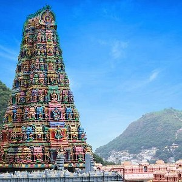

This is easily the best option for kart racing in Vijayawada, for beginners & casual racers - won't recommend for experienced kart racers.
Actually its located in Tadepali - once you cross vijayawada towards Guntur.
Well suited for youngsters. The race track is very well maintained.
The Undavalli Caves, a monolithic example of Indian rock-cut architecture and one of the finest testimonials to ancient viswakarma sthapathis, are located in Vijayawada of Guntur district in the Indian state of Andhra Pradesh. The caves are located south west of Vijayawada, 22 km north east of Guntur City of Andhra Pradesh. It is one of the centrally protected monuments of national importance.The Undavalli caves are carved in the Gupta style of rock-cut architecture, dated back to the 4th-5th century CE. Most Gupta emperors were Vaishnavas; Many sculptures of the deity Narasimha, as well as other legends of Vishnu and from the text Ramayana are featured in the caves. These are associated with the Vishnukundina kings of 420–620 CE. These caves are dedicated to Ananta Padmanabha, a form of Vishnu laying upon Shesha. Later Jain and Buddhist monks used these caves as rest houses.
The Durga temple is located on the top of a hill called Indrakeeladri at the entrance of the city. This holy shrine of Goddess Durga is a Swayambhu (self-manifested) and is the second largest temple in Andhra Pradesh. The “Dasara” festival is celebrated in a very big way here with large number of pilgrims taking part in the festivities. A holy dip in river Krishna (2 kms from RTC Bus stand) is also a big highlight of the place.
Haailand is 15 kms from Vijayawada and 15 kms from Guntur and it is home to 25 rides and spread over 48 acres of landscaped space, built with international standard constructions that are inspired by Tibet, Thailand, Burma, Indonesia, Japan and China. We house 69 international standard resort rooms with a Swimming pool and fully-fledged sports club. At the heart of the Park, is the majestic Food Court in the shape of a Stupa. Here, a veritable Culinary Nirvana awaits you as endless multi-cuisine delights conjured by Master-chefs daintily tease your taste-buds. There are also special F&B outlets located around the Park, serve exotic cuisines ranging from Continental, Italian, Mexican, Thai and Chinese to our own varied traditional flavours from Chettinad, Andhra, Kerala, Punjab, Gujarat, and Rajasthan. Even the most widely travelled gourmet will feel happily satiated at our park.

Kondapalli Fort, also locally known as Kondapalli Kota and Kondapalli Quilla, lies to the west of Kondapalli in Ibrahimpatnam mandal of NTR district in Andhra Pradesh, India was built by Prolaya Vema Reddy[3][4][5][6] of Reddi Kingdom during the 14th century CE.[7] It was initially built as a leisure place and business center and later served as a military training base for the British rulers. According to some other historians it was built in 1360 CE by Anna Vema Reddy[8] after he captured Kondapalli from Mudigonda Chalukyas, the fort has been home to several dynasties, from the Reddi rulers[9][10] Gajapati dynasty to the Nizam Nawabs, and then the East India Company.